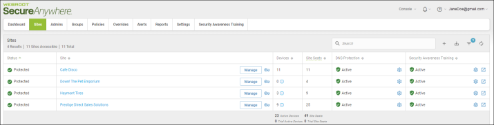
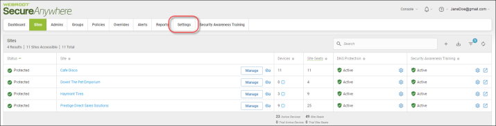
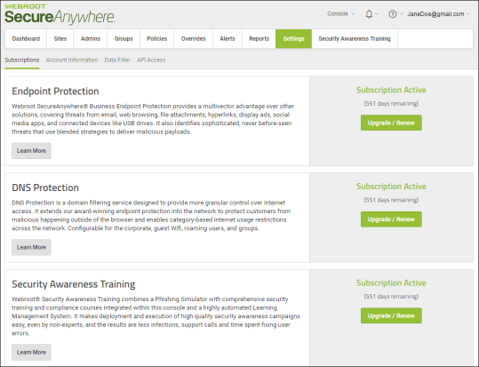
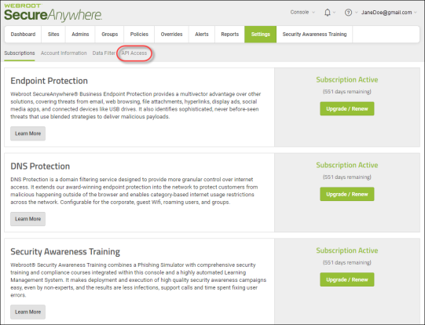
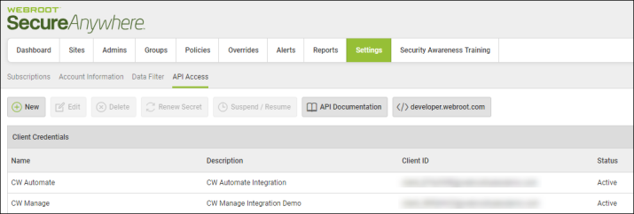
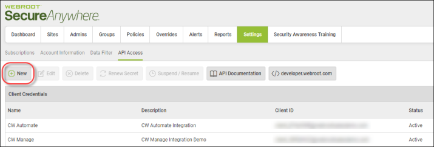
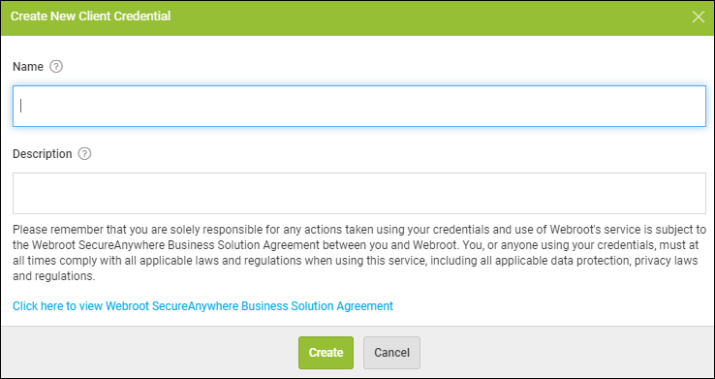
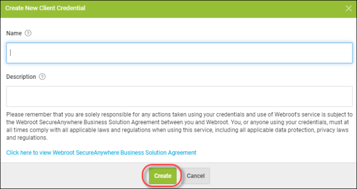
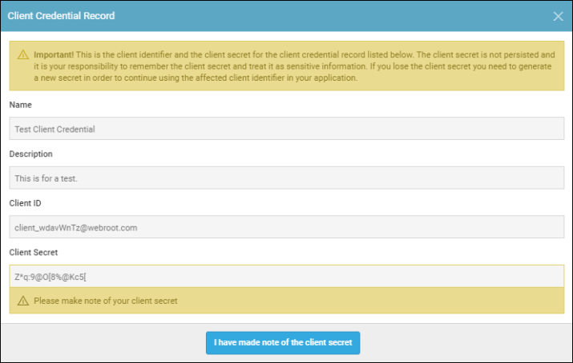

Creating API client credentials allows you to connect with the Unity API system using a secure, authenticated
connection between SecureAnywhere and your managed systems. This, in turn, allows you to automate billing,
reporting, deployment, and other processes.
For more information on API, see Webroot Unity API.
Creating API Client Credentials
-
1 Log in to the management console.The management console displays, with the Sites tab active.
 -
2 Click on the Settings tab.
 -
3 The Settings tab displays with the Subscriptions tab active
 -
4 Click on the API Access tab.
 -
5 The API access tab displays.
 -
6 Click on the New button.
 -
7 The Create New Client Credential window displays.
 -
8 In the Name field, enter the name of the credential.
-
9 In the Description field, enter a short description of the credential.
-
10 Click on the Click here to view Webroot SecureAnywhere Business Solution link, and review the service terms and conditions for Webroot Unity SDK and Unity API Agreement.
-
11 When you're done, click on the Create button.
 -
12 The system displays the Client Credential Record window. This window displays the name and description of the credential, reflecting what you entered, but also the Client ID, which displays in the Client ID column
 -
13 More importantly, the window displays the client secret, which is not displayed in the console. You must make note of the client secret, after which, click on the I have made note of the client secret button.

-
14 As needed, you can highlight the client line item and perform any of the following functions:
- To edit a client credential, click on the Edit button, and update the fields. When you're done, click the Save Changes button.
- To delete a client credential, click on the Delete button. Confirm the deletion by clicking the Delete button.
- To create a new client secret, click on the Renew Secret button, and take note of the new client secret before clicking the I have made note of the client secret button.
- To suspend a client, click the Suspend button. Confirm the suspension by clicking the Suspend button.
- To access relevant documentation, click on the Unity API button.
- To access relevant documentation, click on the Developer button.
-
15 Insert information in the following inputs.You can add more than one o365 configuration by clicking on "Add tenant" button.
-
16 Click on the button shown below, to activate the UTMStack features related to this integration